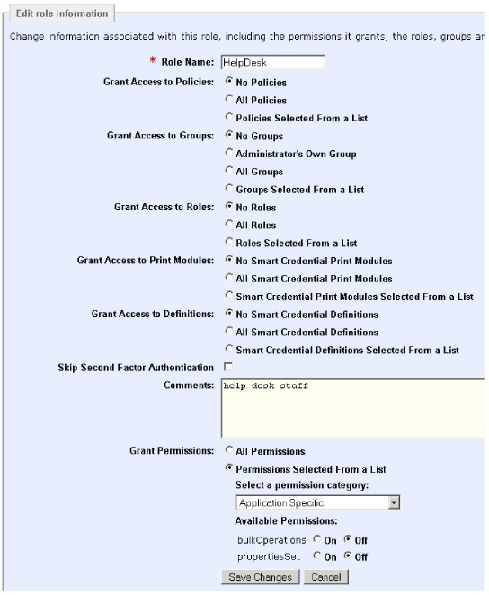
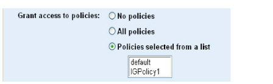
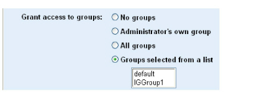
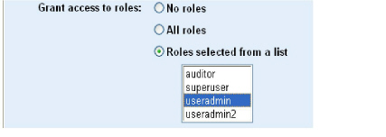
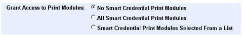
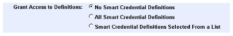

|
IdentityGuard Server 13.0 Administration Guide |
|
IdentityGuard Server 13.0 Administration Guide |
The built-in roles provided with Entrust IdentityGuard only permit an administrator with the superuser role to modify a role. Any administrator with a role that includes the roleSet permission and the All roles, All groups and All policies options set can accomplish this, too. Administrators can always modify their own roles if
● the role being modified is in the administrators role list, and
● the administrator’s own role has the roleSet permission.
When you first create a role, and during the life cycle of a role, you may need to modify it. For example, you may need to change the permissions associated with a role, change the groups the role has access to, or add a new policy to the policy list.
You can edit roles you have created, but you cannot edit built-in system roles.
Note: The more policies, groups and other roles you associate with a role, the more power the role gives any administrator who is assigned that role.
1. Log in to the Entrust IdentityGuard Administration interface as the administrator.
 On the
Windows computer where Entrust IdentityGuard is installed
On the
Windows computer where Entrust IdentityGuard is installed
You must log in as an administrator with the following permissions and options enabled:
● roleCreate
● All policies option
● All groups option
● All roles option
The user must have access to all policies, groups, and roles in order to modify roles.
2. Select Roles on the menu bar.
3. Find the role to modify. (See Find a role)
The View Role page appears and lists all role settings.
The built-in roles are system roles and cannot be modified.
4. Click Edit Role.
An editable version of the settings appear.

5. Set the policies that will apply to an administrator with this role. Under Grant access to policies, do one of the following:

a. To apply no policies, select No Policies.
b. To apply all policies, select All Policies.
c. To select a specific set of policies, select Policies selected from a list to display a list, and then press and hold the Ctrl key and click each item you want to apply. Click a list item again to deselect it.
Note: If you want people with this role to be able to create and modify roles themselves, you must select All Policies.
6. Select the groups that an administrator with this role will have access to. Under Grant access to groups, do one of the following:

a. To select no groups, select No Groups. If you select No Groups, administrators with this role have no group permissions and they are unable to:
– perform bulk operations
– perform user-based operations
– list cards or tokens assigned to users
– list or create preproduced cards
– list or load unassigned tokens
b. To select all groups, select All Groups.
c. To have the role apply to just the group the administrator belongs to, select Administrator's own group.
d. To select a specific set of groups, select Groups selected from a list to display a list, and then press and hold the Ctrl key and click each item you want to apply. Click a list item again to deselect it.
Note: If you want people with this role to be able to create and modify roles themselves, select All Groups.
7. Select other roles that an administrator with this role will have access to. Under Grant access to roles, do one of the following:

a. To deny access to other roles, select No Roles.
b. To grant access to all other roles, select All Roles.
c. To select a specific set of roles, select Roles selected from a list to display a list, and then press and hold the Ctrl key and click each item you want to apply. Click a list item again to deselect it.
Note: If you change the roles your own account is associated with, the changes take effect immediately, and you may find that you have lost permission for actions you could perform before.
Note: If you want people with this role to be able to create and modify roles themselves, then you must select All Roles.
Select the smart credential print modules that an administrator with this role will have access to. Under Grant Access to Print Modules, do one of the following:

a. To deny access to print modules, select No Smart Credential Print Modules.
b. To grant access to all print modules select All Smart Credential Print Modules.
c. To select a specific set of print modules, select Smart Credential Print Modules selected from a list to display a list, and then press and hold the Ctrl key and click each item you want to apply. Click a list item again to deselect it.
8. Select the smart credential definitions that an administrator with this role will have access to. Under Grant Access to Definitions, do one of the following:

a. To deny access to other definitions, select No Smart Credential Definitions.
b. To grant access to all other definitions, select All Smart Credential Definitions.
c. To select a specific set of smart credential definitions, select Smart Credential definitions selected from a list to display a list, and then press and hold the Ctrl key and click each item you want to apply. Click a list item again to deselect it.
9. Select Skip Second-Factor Authentication if this role is for an administrative account for which there is no human user who can interact with Entrust IdentityGuard to authenticate with second-factor authenticators such as tokens or grids. This might be appropriate for a print module or self-service module administrator.
10. Optional. Enter a comment in the Comments box to explain the purpose of the role.
11. Set the permissions to apply to the role. Under Grant Permissions, do one of the following:
a. To apply all permissions, select All permissions.
b. To select a specific list of permissions:
– Select Permissions selected from a list. (For information about specific permissions, see Permissions quick reference.)
– Under Select a permission category, select a permission category from the list.
A list of available permissions appears.
– Select On or Off for each permission, as applicable, to grant or revoke a permission.
– Select other permission categories in turn and set On or Off, as applicable. Anything not modified retains its original setting or the system default.
Note: Turning a permission on or off may require that another permission must also be turned on or off—permission dependencies. For example, to Delete a user, you must also be able to Get the user; that is, userDelete is dependent upon userGet.
12. If you want to allow the role to perform bulk operations, set bulkOperations to On.
13. If you want to allow the role to set properties, set propertiesSet to On.
14. Click Save Changes.